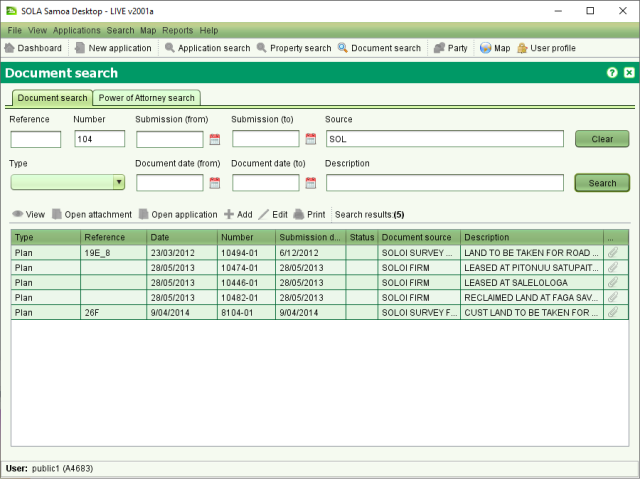

Document Search allows you to find
documents of interest for viewing or printing. SOLA Public Access only allows access to
survey related plans and documents. In most cases the Number criteria will be the best search
value to use. This maps to the survey plan number for survey plans. The document search uses
partial matching, so you only need to enter part of the value to find a match.
Document Search allows you to find
documents of interest for viewing or printing. SOLA Public Access only allows access to
survey related plans and documents. In most cases the Number criteria will be the best search
value to use. This maps to the survey plan number for survey plans. The document search uses
partial matching, so you only need to enter part of the value to find a match.
You can use any combination of search criteria to filter results. The Source criteria will usually be the name of the entity that submitted the documents (e.g. the name of the survey firm), Submission date is the date the document was submitted to SOLA and the Document date is the date printed or written on the face of the document.
You can also use the Map Viewer to locate survey plan numbers that you can then use to search for the survey plan document. Simply zoom into the area of interest on the map and take note of the Application numbers (i.e. red crosses) shown in that area. Use the application number as the Number criteria in the Documents Search.

Example Document Search